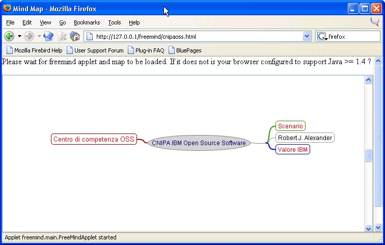
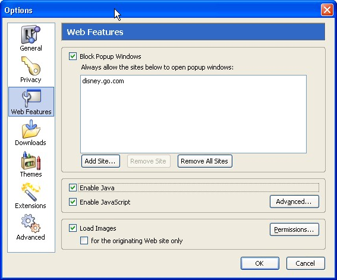
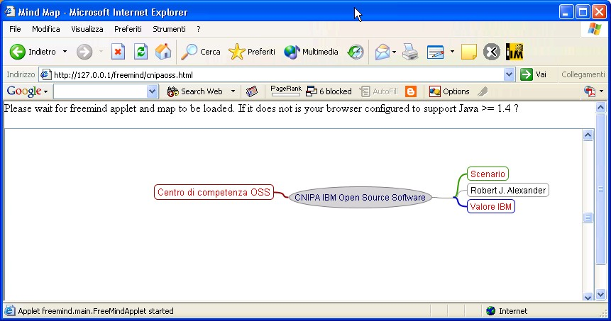
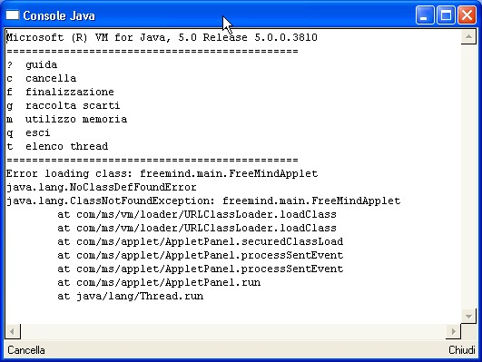
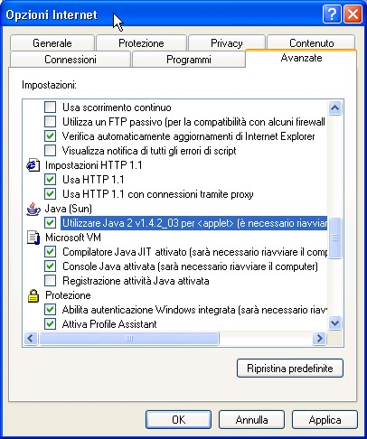

Ver 1.0 - 1 March 2004
Robert J. Alexander - Rome - Italy
(For any corrections or simple thanks 8-> my email is bob and my provider is ngi.it)
Please read the disclaimer before using this document.
So we first installed a web server on XP to have a test, experimental setup.
We then placed the needed files (applet, map and html launcher) in the proper directories of our web server.
We will now start a couple of browsers, visit the proper URLs and (hopefully) will see our maps.
Of course our test system is on a single machine but is is needles to say that the same trick works exactly the same for a web server in Australia and a user browsing here in Italy.
First of all please remember that Freemind's applet, just as the standalone Java application need a Java runtime environment (JRE) to run and this JRE has to be a release >= 1.4 of Sun's Java.
This short guide will not currently explain how to setup such a JRE for your browser. Please note that a "vanilla" XP system will NOT have such a JRE preinstalled.
FireFox is the new name of FireBird which was formerly know as Phoenix. It's a browser only derivative of the great open source browser Mozilla. It is very easy to download and install such a browser and for security and ergonomy I vastly prefer it to MS Internet Explorer.
If your JRE is also installed you should be ready for the show. Let's fire my faithful FireFox at my test web server which is setup as already described in the setting up an apache server and installing the applet and maps chapters of this guide.
Cross your fingers. If all is ok you will see a similar screen (of course the map itself will be yours):

Note that before seeing this the lower section under the "Please wait" line will be empty while the browser is loading both the applet and your map. Depending on your connection speed to the web server it can take some time (even a few minutes).
When the process is finished you will see the map and in the lower status row the "Applet freemind.main.FreeMindApplet started" message.
If the lower part stays empty for too long something's wrong. The first thing I'd check is if executing Java in your browser is permitted. In Firefox click Tools -> Options and select the "Web features" button.

and check if the "Enable Java" checkbox is selected just as in the above picture.
Similar stuff here. If all goes well here is what you will see:

If you do not see this most likely you have a problem with the Java runtime. You will probably have the lower part of the browser greyed out and if you move the cursor around, in some apparently random spots you will see an error in the lower status bar. If you press the View -> Java console menu you will see something like:

To correct this go to Tools -> Internet Options -> Advanced and scroll about halfway to check if "Use Java2" is enabled. If it's not check it, Apply and Ok.

You should now try the URL again and all should be set. If not this guide needs some volunteers to expand it 8-).
Copyright © 2004 Robert Alexander - bob at ngi.it